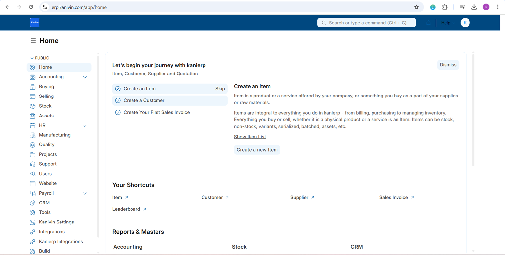

What is KanivinERP?
KanivinERP is business management software that helps companies stay on top of their operations, whether it’s tracking inventory, managing finances, handling projects, or keeping customers happy. Think of it as the central nervous system for your business, bringing everything together in one place.
Most ERPs are clunky, expensive, and a headache to customize. KanivinERP is different. It is open-source, cloud-ready, and built to be flexible. You get the power of an enterprise system without the usual complications.

Why KanivinERP?
Because running a business is already hard enough. Your ERP should not make it harder.
With KanivinERP, you get a complete set of tools for all your business needs, built in and ready to use. With KanivinERP, you get:
- A complete suite of tools – From accounting to Accounting to Inventory, everything you need is built-in.
- No vendor lock-in – Open-source means you own your data and have the freedom to customize.
- Easy to use – A clean, modern interface that doesn’t feel like it was built in the ’90s.
- Cost-effective – No sky-high licensing fees. Just powerful software that works.
Whether you are a small business or a growing enterprise, KanivinERP helps you stay organized, automate the boring stuff, and focus on what really matters - running your business.
Key features
KanivinERP will help you to:
- Keep track of the financial indicators of the organization.
- Track all invoices and payments.
- Know what quantity of which product is available in stock.
- Identify and track your key performance indicators (KPIs).
- Identify open customer queries.
- Manage employee payroll.
- Assign tasks and follow up on them.
- Maintain a database of all your customers, suppliers, and contacts.
- Prepare quotations.
- Track your budgets and spending.
- Determine effective selling price based on the actual raw material, machinery and effort cost.
- Get reminders on maintenance schedules.
- Publish your website.
And a ton more.
Under the Hood
- kanivin Framework: A full-stack web application framework written in Python and Javascript. The framework provides a robust foundation for building web applications, including a database abstraction layer, user authentication, and a REST API.
- kanivin UI: A Vue-based UI library, to provide a modern user interface. The kanivin UI library provides a variety of components that can be used to build single-page applications on top of the kanivin Framework.